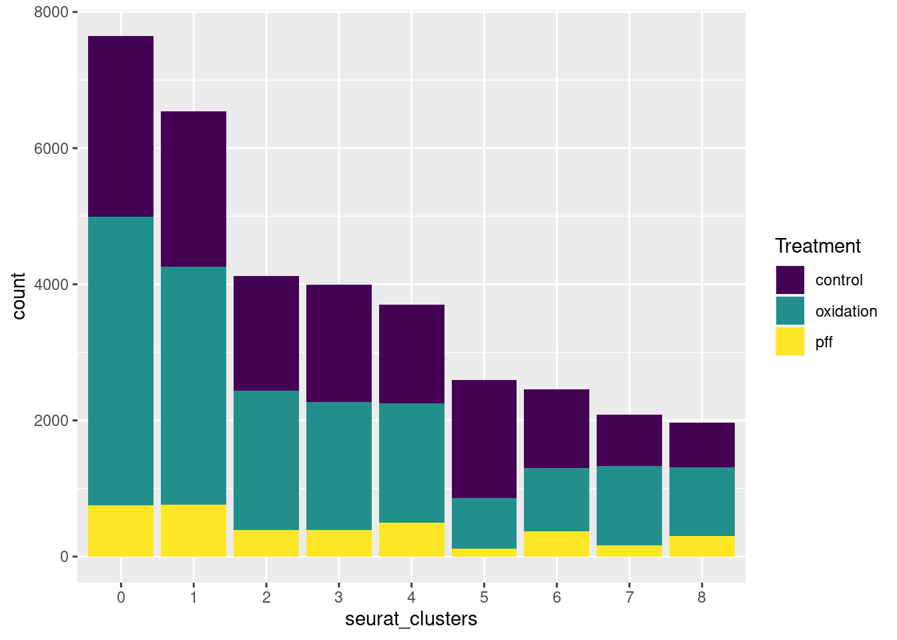
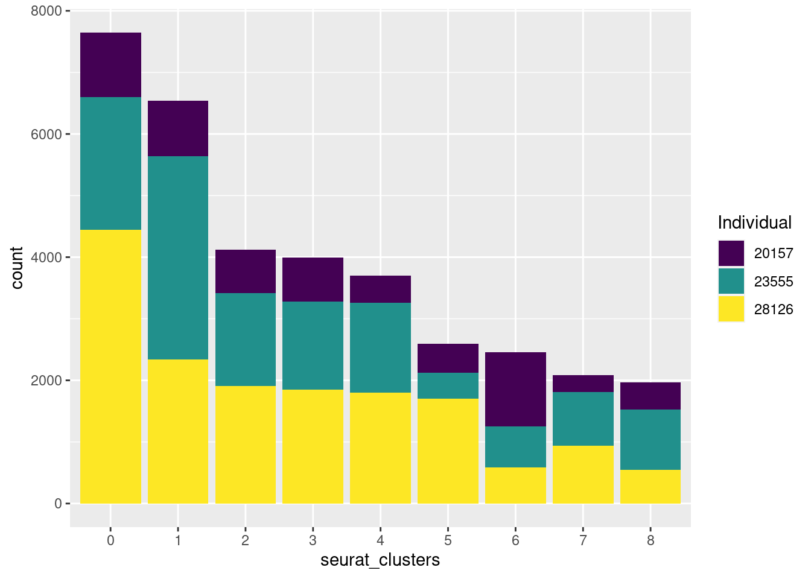

variance_estimation_full
Ben Umans
2021-08-06
Last updated: 2021-08-20
Checks: 7 0
Knit directory: Organoid_Stress_Pilot/
This reproducible R Markdown analysis was created with workflowr (version 1.6.2). The Checks tab describes the reproducibility checks that were applied when the results were created. The Past versions tab lists the development history.
Great! Since the R Markdown file has been committed to the Git repository, you know the exact version of the code that produced these results.
Great job! The global environment was empty. Objects defined in the global environment can affect the analysis in your R Markdown file in unknown ways. For reproduciblity it’s best to always run the code in an empty environment.
The command set.seed(20210705) was run prior to running the code in the R Markdown file. Setting a seed ensures that any results that rely on randomness, e.g. subsampling or permutations, are reproducible.
Great job! Recording the operating system, R version, and package versions is critical for reproducibility.
Nice! There were no cached chunks for this analysis, so you can be confident that you successfully produced the results during this run.
Great job! Using relative paths to the files within your workflowr project makes it easier to run your code on other machines.
Great! You are using Git for version control. Tracking code development and connecting the code version to the results is critical for reproducibility.
The results in this page were generated with repository version 8f37f12. See the Past versions tab to see a history of the changes made to the R Markdown and HTML files.
Note that you need to be careful to ensure that all relevant files for the analysis have been committed to Git prior to generating the results (you can use wflow_publish or wflow_git_commit). workflowr only checks the R Markdown file, but you know if there are other scripts or data files that it depends on. Below is the status of the Git repository when the results were generated:
Ignored files:
Ignored: .DS_Store
Ignored: .Rhistory
Ignored: data/.DS_Store
Ignored: data/fastq/
Ignored: output/.DS_Store
Ignored: output/YG-BU-01_human/
Ignored: output/YG-BU-02_human/
Ignored: output/YG-BU-03_human/
Ignored: output/YG-BU-04_human/
Ignored: output/YG-BU-05_human/
Ignored: output/YG-BU-06_human/
Ignored: output/YG-BU-07_human/
Ignored: output/YG-BU-08_human/
Ignored: output/YG-BU-09_human/
Ignored: output/YG-BU-10_human/
Ignored: output/YG-BU-11_human/
Ignored: output/fitmm0.neuron.RDS
Ignored: output/fitmm1.neuron.RDS
Ignored: output/fitmm2.neuron.RDS
Ignored: output/fitmm3.neuron.RDS
Ignored: output/fitmm4.neuron.RDS
Ignored: output/fitmm5.neuron.RDS
Ignored: output/fitmm6.neuron.RDS
Ignored: output/fitmm7.neuron.RDS
Ignored: output/fitmm8.neuron.RDS
Ignored: output/merged_full_dataset.RDS
Ignored: output/neuron0_oxidation_table.csv
Ignored: output/neuron1_oxidation_table.csv
Ignored: output/neuron2_oxidation_table.csv
Ignored: output/neuron3_oxidation_table.csv
Ignored: output/neuron4_oxidation_table.csv
Ignored: output/neuron5_oxidation_table.csv
Ignored: output/neuron6_oxidation_table.csv
Ignored: output/neuron7_oxidation_table.csv
Ignored: output/neuron8_oxidation_table.csv
Ignored: output/organoid.combined.full.sct.neuron.RDS
Ignored: output/organoid.combined.sct.neuron.markers.RDS
Ignored: output/organoid.combined.sct03.RDS
Ignored: output/organoid.combined.sct05.RDS
Ignored: output/organoid.combined.sct1.RDS
Untracked files:
Untracked: analysis/cell_cycle_full.Rmd
Untracked: data/Snakefile_cellranger
Untracked: data/all.vcf.bed
Untracked: data/australia.rds
Untracked: data/cellranger.38.dict
Untracked: data/cluster.json
Untracked: data/config.yaml
Untracked: data/environment.yaml
Untracked: data/exclude_fulldata.rds
Untracked: data/human.unsorted.vcf
Untracked: data/human.vcf
Untracked: data/human.vcf.bed
Untracked: data/library9.rds
Untracked: data/log/
Untracked: data/mysterycell.rds
Untracked: data/organoid.combined.sct03.neuron.RDS
Untracked: data/organoid_combined_sct03.RDS
Untracked: data/reheaded.vcf
Untracked: data/snakelog.out
Untracked: data/snakemake_cellranger.batch
Untracked: data/sorted.vcf
Untracked: data/submit.sh
Untracked: data/unsorted.vcf
Untracked: data/unsorted_header
Untracked: data_S2/
Unstaged changes:
Modified: .gitignore
Modified: analysis/combine_experiments.Rmd
Modified: analysis/de_full.Rmd
Modified: analysis/merge_full_data.Rmd
Modified: analysis/precheck.Rmd
Modified: analysis/remove-mesenchyme.Rmd
Modified: analysis/variance-estimation.Rmd
Note that any generated files, e.g. HTML, png, CSS, etc., are not included in this status report because it is ok for generated content to have uncommitted changes.
These are the previous versions of the repository in which changes were made to the R Markdown (analysis/variance_estimation_full.Rmd) and HTML (docs/variance_estimation_full.html) files. If you’ve configured a remote Git repository (see ?wflow_git_remote), click on the hyperlinks in the table below to view the files as they were in that past version.
| File | Version | Author | Date | Message |
|---|---|---|---|---|
| Rmd | 8f37f12 | Ben Umans | 2021-08-20 | Compiled after lab meeting 8/18/21 |
Introduction
Instead of looking individually at each cluster, in order to assess the contributors to variation in the whole experiment I’ll consider the whole dataset(s), pseudobulked into their respective clusters.
pacman::p_load(edgeR, variancePartition, BiocParallel, limma)
library(Seurat)
library(tidyverse)── Attaching packages ────────────────────────────────── tidyverse 1.3.1 ──✓ tibble 3.1.2 ✓ dplyr 1.0.7
✓ tidyr 1.1.3 ✓ stringr 1.4.0
✓ readr 1.4.0 ✓ forcats 0.5.1
✓ purrr 0.3.4 ── Conflicts ───────────────────────────────────── tidyverse_conflicts() ──
x purrr::accumulate() masks foreach::accumulate()
x readr::col_factor() masks scales::col_factor()
x dplyr::combine() masks Biobase::combine(), BiocGenerics::combine()
x purrr::discard() masks scales::discard()
x dplyr::filter() masks stats::filter()
x dplyr::lag() masks stats::lag()
x BiocGenerics::Position() masks ggplot2::Position(), base::Position()
x purrr::when() masks foreach::when()library(ggplot2)
library(RColorBrewer)
library(cowplot)
********************************************************Note: As of version 1.0.0, cowplot does not change the default ggplot2 theme anymore. To recover the previous behavior, execute:
theme_set(theme_cowplot())********************************************************library(knitr)
Sys.setenv(TZ='America/Chicago')
generate.pseudobulk <- function(object, labels, assay="RNA",slot="counts") {
factorlist <- list()
for (i in labels) factorlist[[i]] <- unique(object@meta.data[,i])
meta <- expand.grid(factorlist, stringsAsFactors = FALSE)
rownames(meta) <- apply(meta, 1, function(x) paste0(x, collapse = '.'))
# build the output matrix
n <- nrow(meta)
out <- matrix(nrow=dim(object[[assay]])[1], ncol=n, data=0)
rownames(out) <- rownames(object[[assay]])
colnames(out) <- rownames(meta)
ncells <- c()
ncounts <- c()
total.cells <- dim(object[[assay]])[2]
for (i in 1:n)
{
#prog(i,n)
cells <- 1:total.cells
for (j in names(meta)) {
keep <- which(object@meta.data[[j]] == meta[i,j])
cells <- cells[cells %in% keep]
}
ncells[i] <- length(cells)
ncounts[i] <- sum(slot(object[[assay]], slot)[,cells])
#some other thing to measure
if (length(cells)==1) {
out[,i] <- slot(object[[assay]], slot)[,cells]
} else {
out[,i] <- Matrix::rowSums(slot(object[[assay]], slot)[,cells])
}
}
meta$ncells <- ncells
meta$ncounts <- ncounts/max(ncounts)
#add that something else as metadata
return(list(counts=out, meta=meta))
}
# keep only levels with more than 'threshold' cells
filter.pseudobulk <- function(pseudobulk, threshold = 0) {
w <- which(pseudobulk$meta$ncells > threshold)
pseudobulk$counts <- pseudobulk$counts[,w]
pseudobulk$meta <- pseudobulk$meta[w,]
pseudobulk
}
newqqplot=function(pvals, quant, title){
len = length(pvals)
res=qqplot(-log10((1:len)/(1+len)),pvals,plot.it=F)
plot(res$x,res$y, main=title, xlab="Theoretical", ylab="Actual", col=ifelse(res$y>as.numeric(quantile(res$y, quant[1])), ifelse(res$y>as.numeric(quantile(res$y, quant[2])), "red", "blue"), "black"))
abline(0, 1)
}
organoid.combined.sct <- readRDS(file = "output/merged_full_dataset.RDS")
organoid.combined.sct.neuron <- readRDS(file = "output/organoid.combined.full.sct.neuron.RDS")
param = SnowParam(20, "SOCK", progressbar=TRUE)
register(param)I’ll start by looking at the whole neuronal dataset in aggregate.
pseudo.neuron <- generate.pseudobulk(organoid.combined.sct.neuron, labels = c("seurat_clusters", "stim", "replicate", "cell.line"))
pseudo.neuron <- filter.pseudobulk(pseudo.neuron)
d.neuron <- DGEList(pseudo.neuron$counts)
meta_d.neuron <- d.neuron$samples[,c("lib.size","norm.factors")]
meta_d.neuron <- cbind(meta_d.neuron, pseudo.neuron$meta)
d.neuron$samples <- meta_d.neuron
keep.neuron <- filterByExpr(d.neuron) #, group=d10.full$samples$stim
d.neuron <- d.neuron[keep.neuron,]
d.neuron <- calcNormFactors(d.neuron, method = "TMM")
fbase <- ~ (1|seurat_clusters) + (1|cell.line) + (1|stim) + (1|replicate)
voomed.varpart.neuron <- voomWithDreamWeights(d.neuron, fbase, d.neuron$samples, plot=TRUE)Memory usage to store result: > 187 Mb
Dividing work into 100 chunks...
Total: 101 s
varpart.neuron <- fitExtractVarPartModel(voomed.varpart.neuron, fbase, d.neuron$samples)Dividing work into 100 chunks...
Total: 123 shead(varpart.neuron[order(varpart.neuron$stim, decreasing=TRUE),]) cell.line replicate seurat_clusters stim Residuals
PDK1 0.0009095869 0.05230315 0.1603782 0.4610488 0.3253603
ANKRD37 0.0114691676 0.09017977 0.1640024 0.4435252 0.2908235
DDIT4 0.0048576663 0.01498010 0.3423209 0.3793108 0.2585305
MTFP1 0.0210815751 0.06377289 0.2593170 0.3490097 0.3068188
FUT11 0.0113449677 0.15871350 0.1707366 0.3393506 0.3198543
MIR210HG 0.0120744208 0.13644330 0.2324590 0.3286134 0.2904098vp.neuron <- sortCols(varpart.neuron)
# plotPercentBars(vp1[1:10,])
plotVarPart(vp.neuron) + ggtitle("Variance partition neurons (resolution=0.1)")
ggsave("docs/figure/neuronal_varpart.png")How many cells are in each group here?
table(Idents(organoid.combined.sct.neuron), organoid.combined.sct.neuron$stim) %>% kable(caption="Cells by cluster and treatment, neuronal datset")| control | oxidation | pff | |
|---|---|---|---|
| 0 | 2659 | 4239 | 752 |
| 1 | 2287 | 3492 | 765 |
| 2 | 1684 | 2048 | 389 |
| 3 | 1717 | 1878 | 395 |
| 4 | 1446 | 1755 | 500 |
| 5 | 1736 | 746 | 115 |
| 6 | 1162 | 927 | 370 |
| 7 | 749 | 1162 | 169 |
| 8 | 652 | 1013 | 302 |
table(Idents(organoid.combined.sct.neuron), organoid.combined.sct.neuron$replicate) %>% kable(caption="Cells by cluster and replicate, neuronal datset")| 2 | 3 | 4 | |
|---|---|---|---|
| 0 | 2303 | 1471 | 3876 |
| 1 | 2353 | 947 | 3244 |
| 2 | 1269 | 967 | 1885 |
| 3 | 1336 | 1102 | 1552 |
| 4 | 1465 | 866 | 1370 |
| 5 | 415 | 1568 | 614 |
| 6 | 971 | 581 | 907 |
| 7 | 594 | 417 | 1069 |
| 8 | 1146 | 320 | 501 |
table(Idents(organoid.combined.sct.neuron), organoid.combined.sct.neuron$cell.line) %>% kable(caption="Cells by cluster and cell line, neuronal datset")| 20157 | 23555 | 28126 | |
|---|---|---|---|
| 0 | 1055 | 2152 | 4443 |
| 1 | 908 | 3295 | 2341 |
| 2 | 702 | 1509 | 1910 |
| 3 | 710 | 1435 | 1845 |
| 4 | 446 | 1458 | 1797 |
| 5 | 474 | 422 | 1701 |
| 6 | 1202 | 667 | 590 |
| 7 | 274 | 866 | 940 |
| 8 | 442 | 973 | 552 |
table(organoid.combined.sct.neuron$stim, organoid.combined.sct.neuron$cell.line) %>% kable(caption="Cells by treatment and individual, full datset")| 20157 | 23555 | 28126 | |
|---|---|---|---|
| control | 1941 | 4286 | 7865 |
| oxidation | 3964 | 6761 | 6535 |
| pff | 308 | 1730 | 1719 |
groups <- table(Idents(organoid.combined.sct.neuron), organoid.combined.sct.neuron$cell.line, organoid.combined.sct.neuron$replicate, organoid.combined.sct.neuron$stim)
ggplot(data.frame(x=as.vector(groups)), aes(x=x)) + geom_histogram() + xlab("Cells per pseudobulk cluster") + ggtitle("Nummber of cells by grouping (Treatment, Cluster, Replicate, Cell line)")`stat_bin()` using `bins = 30`. Pick better value with `binwidth`.ggsave("docs/figure/pseudobulk_histo.png")Saving 7 x 5 in image
`stat_bin()` using `bins = 30`. Pick better value with `binwidth`.#because we filtered empty categories from the pseudobulk data used for testing, instead we're really using something a little different
ggplot(data.frame(x=d.neuron$samples$ncells), aes(x=x)) + geom_histogram() + xlab("Cells per pseudobulk cluster") + ggtitle("Pseudobulk cluster sizes (Treatment, Cluster, Replicate, Cell line)")`stat_bin()` using `bins = 30`. Pick better value with `binwidth`.sum(d.neuron$samples$ncells < 50)[1] 45sum(as.vector(groups) ==0)[1] 60PCA
How does the variation we see in the pseudobulk data compare to the PCA of the single-cell data? First, are our experimental inputs evenly distributed across the UMAP space?
# DimPlot(organoid.combined.sct.neuron, reduction = "pca", group.by = "cell.line", dims = c(13,15), cols=brewer.pal(3, "Dark2"))
DimPlot(organoid.combined.sct.neuron, split.by = "stim")DimPlot(organoid.combined.sct.neuron, split.by = "cell.line")This might be better shown as bar charts.
ggplot(organoid.combined.sct.neuron@meta.data, aes(x=seurat_clusters, fill=cell.line)) + geom_bar() + scale_fill_brewer(palette = "Set2", "Cell line") + xlab("Seurat cluster") + ylab("Cell count")
ggplot(organoid.combined.sct.neuron@meta.data, aes(x=seurat_clusters, fill=stim)) + geom_bar() + scale_fill_brewer(palette = "Set2", "Treatment") + xlab("Seurat cluster") + ylab("Cell count")
Next, we can do PCA and correlate with the different factors.
pca = organoid.combined.sct.neuron@reductions$pca
eigValues = (pca@stdev)^2
varExplained = eigValues / sum(eigValues)
sum(varExplained[1:12])[1] 0.8081677plot(1:length(varExplained), cumsum(varExplained))p_comps <- 1:15
info <- organoid.combined.sct.neuron@meta.data %>%
dplyr::select(c(seurat_clusters, stim, replicate, cell.line)) #subset sample info for technical/biological variables
scores_cleaned <- pca@cell.embeddings
pca_genes_cleaned <- pca@feature.loadings
#Calculate correlations
pc_cov_cor <- matrix(nrow = ncol(info), ncol = length(p_comps),
dimnames = list(colnames(info), colnames(pca_genes_cleaned)[p_comps]))
PC_pvalues <- matrix(data = NA, nrow = 10, ncol = 4, dimnames = list(c("PC1", "PC2", "PC3", "PC4", "PC5", "PC6", "PC7", "PC8", "PC9", "PC10"), c("cluster", "treatment", "replicate", "individual")))
for (pc in p_comps) {
for (covariate in 1:ncol(info)) {
lm_result <- lm(scores_cleaned[, pc] ~ info[, covariate])
r2 <- summary(lm_result)$r.squared
fstat <- as.data.frame(summary(lm_result)$fstatistic)
p_fstat <- 1-pf(fstat[1,], fstat[2,], fstat[3,])
# PC_pvalues[pc, covariate] <- p_fstat
pc_cov_cor[covariate, pc] <- r2
}
}
pc_cov_cor %>% kable() | PC_1 | PC_2 | PC_3 | PC_4 | PC_5 | PC_6 | PC_7 | PC_8 | PC_9 | PC_10 | PC_11 | PC_12 | PC_13 | PC_14 | PC_15 | |
|---|---|---|---|---|---|---|---|---|---|---|---|---|---|---|---|
| seurat_clusters | 0.8958403 | 0.7895935 | 0.6707008 | 0.7290044 | 0.6701770 | 0.5782462 | 0.7102727 | 0.3513164 | 0.4469069 | 0.1222642 | 0.3089429 | 0.1223491 | 0.0910588 | 0.0700613 | 0.0702346 |
| stim | 0.0036428 | 0.0021280 | 0.0016955 | 0.0004588 | 0.0028168 | 0.0032903 | 0.0091703 | 0.0011491 | 0.0035367 | 0.0035304 | 0.0035998 | 0.0003040 | 0.0012347 | 0.0006850 | 0.0003050 |
| replicate | 0.0056036 | 0.0021071 | 0.0070883 | 0.0066260 | 0.0235621 | 0.0135693 | 0.0176683 | 0.0051979 | 0.0046823 | 0.0060312 | 0.0084960 | 0.0015327 | 0.0046115 | 0.0065685 | 0.0004392 |
| cell.line | 0.0091985 | 0.0138512 | 0.0133252 | 0.0031600 | 0.0116446 | 0.0349659 | 0.0215569 | 0.0764785 | 0.0195194 | 0.0004518 | 0.0007923 | 0.0128102 | 0.0890779 | 0.0323441 | 0.0212478 |
Now look at the pseudobulked data.
cleaned.cpm <- cpm(d.neuron, log=TRUE, normalized.lib.sizes = T)
#PCA
pca_genes_cleaned <- prcomp(t(cleaned.cpm), scale = T)
scores_cleaned <- pca_genes_cleaned$x
variances_cleaned <- pca_genes_cleaned$sdev^2
explained_cleaned <- variances_cleaned / sum(variances_cleaned)
plot(pca_genes_cleaned, main = "Variance per PC")plot(explained_cleaned, main = "Fraction of variation explained per PC")p_comps <- 1:8
info <- d.neuron$samples %>%
dplyr::select(c(seurat_clusters, stim, replicate, cell.line)) #subset sample info for technical/biological variables
#Calculate correlations
pc_cov_cor <- matrix(nrow = ncol(info), ncol = length(p_comps),
dimnames = list(colnames(info), colnames(pca_genes_cleaned$x)[p_comps]))
PC_pvalues <- matrix(data = NA, nrow = 8, ncol = 4, dimnames = list(c("PC1", "PC2", "PC3", "PC4", "PC5", "PC6", "PC7", "PC8"), c("cluster", "treatment", "replicate", "individual")))
for (pc in p_comps) {
for (covariate in 1:ncol(info)) {
lm_result <- lm(pca_genes_cleaned$x[, pc] ~ info[, covariate])
r2 <- summary(lm_result)$r.squared
fstat <- as.data.frame(summary(lm_result)$fstatistic)
p_fstat <- 1-pf(fstat[1,], fstat[2,], fstat[3,])
PC_pvalues[pc, covariate] <- p_fstat
pc_cov_cor[covariate, pc] <- r2
}
}
pc_cov_cor %>% kable() | PC1 | PC2 | PC3 | PC4 | PC5 | PC6 | PC7 | PC8 | |
|---|---|---|---|---|---|---|---|---|
| seurat_clusters | 0.0667616 | 0.9303017 | 0.6162137 | 0.4693923 | 0.3191905 | 0.2485544 | 0.2530975 | 0.1071118 |
| stim | 0.0151410 | 0.0036333 | 0.0241423 | 0.0068561 | 0.1015355 | 0.0390607 | 0.0173576 | 0.0011135 |
| replicate | 0.0367503 | 0.0071796 | 0.0076231 | 0.0062657 | 0.0055593 | 0.0129276 | 0.0118573 | 0.0022477 |
| cell.line | 0.0289105 | 0.0086637 | 0.0045266 | 0.0077564 | 0.0523037 | 0.0032288 | 0.0070238 | 0.0094167 |
These are more or less in agreement that cell cluster accounts for the vast majority of differences, spanning many high-value PCs. For the pseudobulk data the first PC does not particularly correlate with cell cluster, which is consistent with the high residuals seen in the variance decomposition.
sessionInfo()R version 3.6.1 (2019-07-05)
Platform: x86_64-pc-linux-gnu (64-bit)
Running under: Scientific Linux 7.4 (Nitrogen)
Matrix products: default
BLAS/LAPACK: /software/openblas-0.2.19-el7-x86_64/lib/libopenblas_haswellp-r0.2.19.so
locale:
[1] LC_CTYPE=en_US.UTF-8 LC_NUMERIC=C
[3] LC_TIME=en_US.UTF-8 LC_COLLATE=en_US.UTF-8
[5] LC_MONETARY=en_US.UTF-8 LC_MESSAGES=en_US.UTF-8
[7] LC_PAPER=en_US.UTF-8 LC_NAME=C
[9] LC_ADDRESS=C LC_TELEPHONE=C
[11] LC_MEASUREMENT=en_US.UTF-8 LC_IDENTIFICATION=C
attached base packages:
[1] parallel stats graphics grDevices utils datasets methods
[8] base
other attached packages:
[1] knitr_1.23 cowplot_1.0.0
[3] RColorBrewer_1.1-2 forcats_0.5.1
[5] stringr_1.4.0 dplyr_1.0.7
[7] purrr_0.3.4 readr_1.4.0
[9] tidyr_1.1.3 tibble_3.1.2
[11] tidyverse_1.3.1 Seurat_3.1.3
[13] BiocParallel_1.18.0 variancePartition_1.14.1
[15] Biobase_2.44.0 BiocGenerics_0.30.0
[17] scales_1.1.1 foreach_1.5.1
[19] ggplot2_3.3.5 edgeR_3.26.5
[21] limma_3.40.6 workflowr_1.6.2
loaded via a namespace (and not attached):
[1] snow_0.4-3 readxl_1.3.1 backports_1.2.1
[4] plyr_1.8.6 igraph_1.2.4.1 lazyeval_0.2.2
[7] splines_3.6.1 listenv_0.7.0 digest_0.6.27
[10] htmltools_0.5.1.1 gdata_2.18.0 fansi_0.5.0
[13] magrittr_2.0.1 cluster_2.1.0 doParallel_1.0.14
[16] ROCR_1.0-7 globals_0.12.4 modelr_0.1.8
[19] RcppParallel_5.1.4 prettyunits_1.1.1 colorspace_2.0-2
[22] rvest_1.0.0 rappdirs_0.3.1 ggrepel_0.8.1
[25] haven_2.3.1 xfun_0.24 crayon_1.4.1
[28] jsonlite_1.7.2 lme4_1.1-21 survival_3.2-11
[31] zoo_1.8-6 iterators_1.0.13 ape_5.4-1
[34] glue_1.4.2 gtable_0.3.0 leiden_0.3.1
[37] future.apply_1.3.0 DBI_1.1.0 bibtex_0.4.2
[40] Rcpp_1.0.6 metap_1.1 viridisLite_0.3.0
[43] progress_1.2.2 reticulate_1.16 rsvd_1.0.1
[46] tsne_0.1-3 htmlwidgets_1.5.3 httr_1.4.2
[49] gplots_3.0.1.1 ellipsis_0.3.2 ica_1.0-2
[52] farver_2.1.0 pkgconfig_2.0.3 uwot_0.1.5
[55] dbplyr_2.1.1 locfit_1.5-9.1 utf8_1.1.4
[58] labeling_0.4.2 tidyselect_1.1.0 rlang_0.4.11
[61] reshape2_1.4.4 later_1.2.0 cellranger_1.1.0
[64] munsell_0.5.0 tools_3.6.1 cli_2.5.0
[67] generics_0.1.0 pacman_0.5.1 broom_0.7.8
[70] ggridges_0.5.1 evaluate_0.14 yaml_2.2.1
[73] npsurv_0.4-0 fs_1.3.1 fitdistrplus_1.0-14
[76] caTools_1.17.1.2 RANN_2.6.1 pbapply_1.4-0
[79] future_1.14.0 nlme_3.1-140 whisker_0.3-2
[82] xml2_1.3.2 rstudioapi_0.13 compiler_3.6.1
[85] pbkrtest_0.4-7 plotly_4.9.4.1 png_0.1-7
[88] lsei_1.2-0 reprex_2.0.0 stringi_1.6.2
[91] highr_0.8 lattice_0.20-38 Matrix_1.2-18
[94] nloptr_1.2.2.1 vctrs_0.3.8 pillar_1.6.1
[97] lifecycle_1.0.0 Rdpack_0.11-0 lmtest_0.9-37
[100] RcppAnnoy_0.0.12 data.table_1.14.0 bitops_1.0-6
[103] irlba_2.3.3 gbRd_0.4-11 httpuv_1.6.1
[106] colorRamps_2.3 R6_2.5.0 promises_1.2.0.1
[109] KernSmooth_2.23-15 gridExtra_2.3 codetools_0.2-16
[112] boot_1.3-23 MASS_7.3-51.4 gtools_3.8.1
[115] assertthat_0.2.1 rprojroot_2.0.2 withr_2.4.2
[118] sctransform_0.2.0 hms_1.1.0 grid_3.6.1
[121] minqa_1.2.4 rmarkdown_1.13 Rtsne_0.15
[124] git2r_0.26.1 lubridate_1.7.10